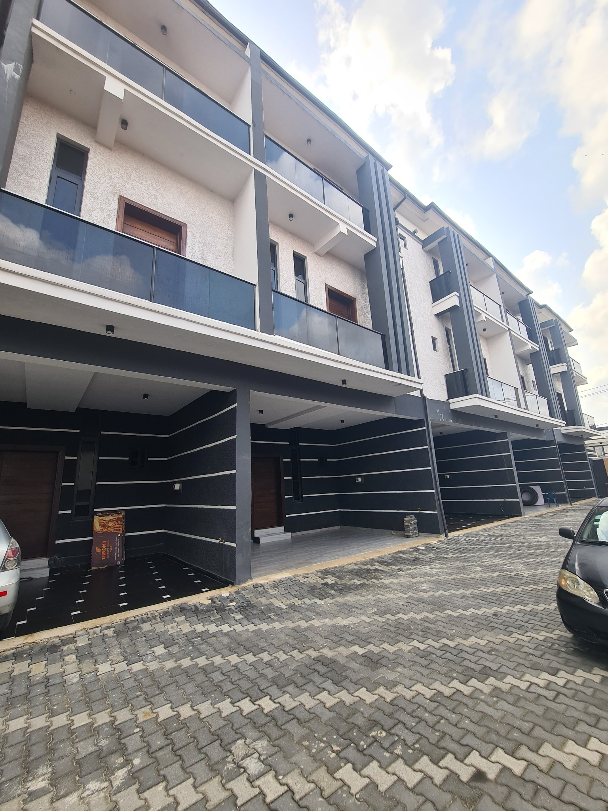
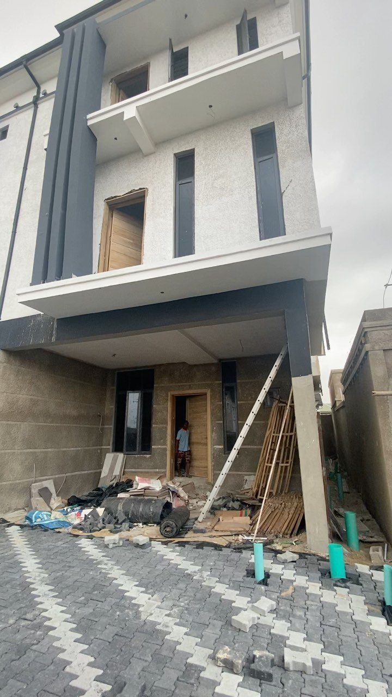
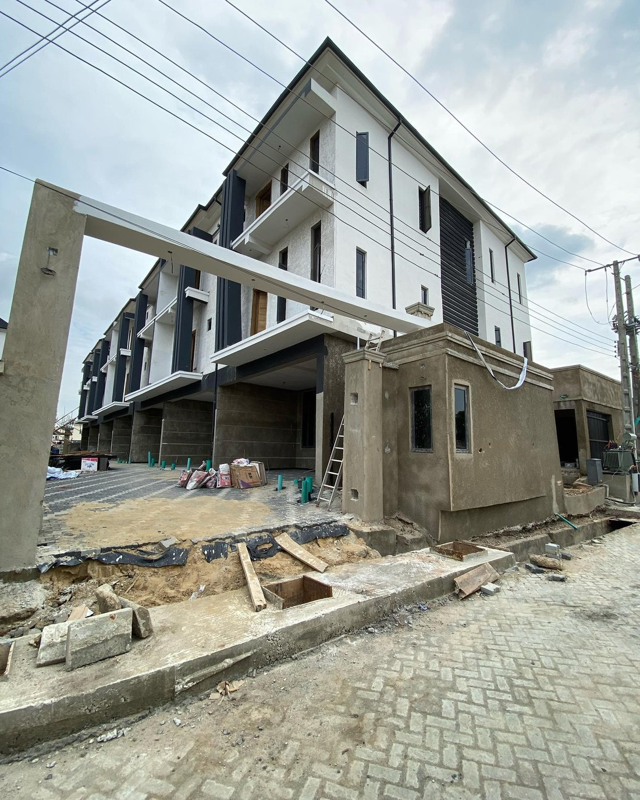
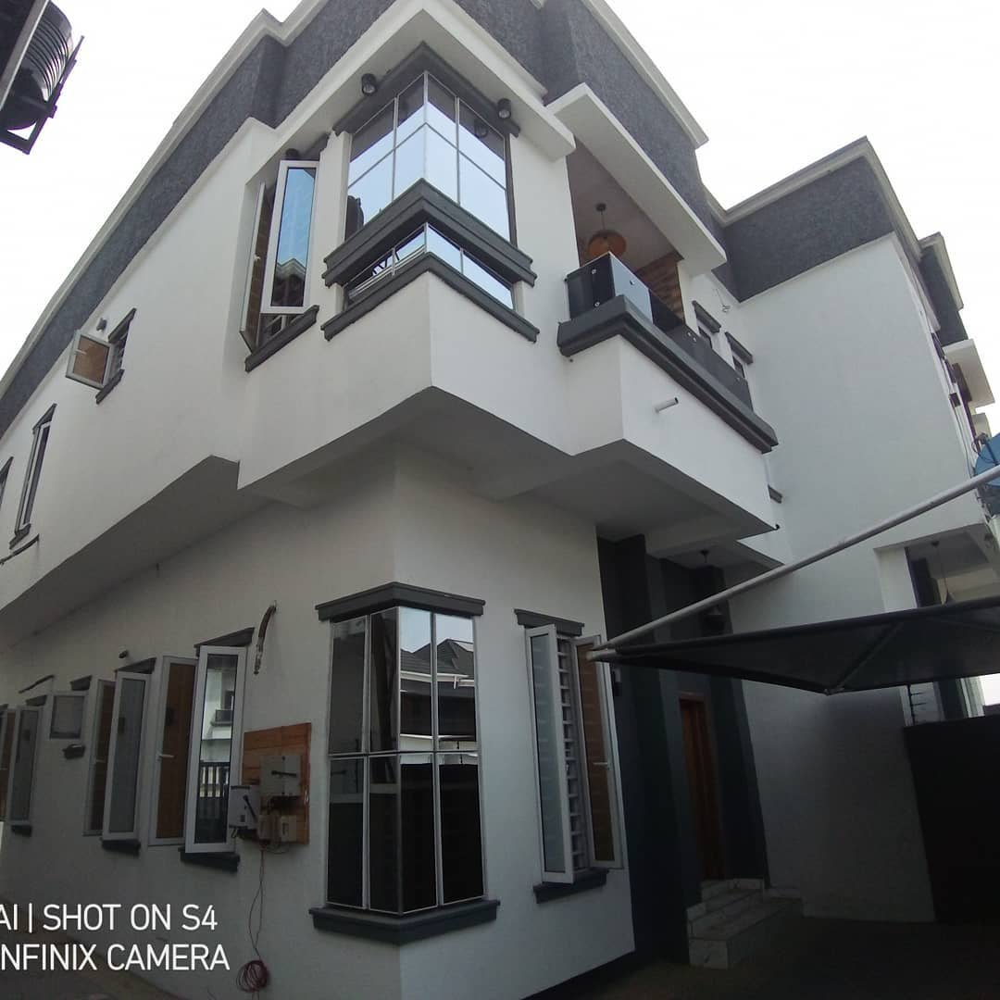
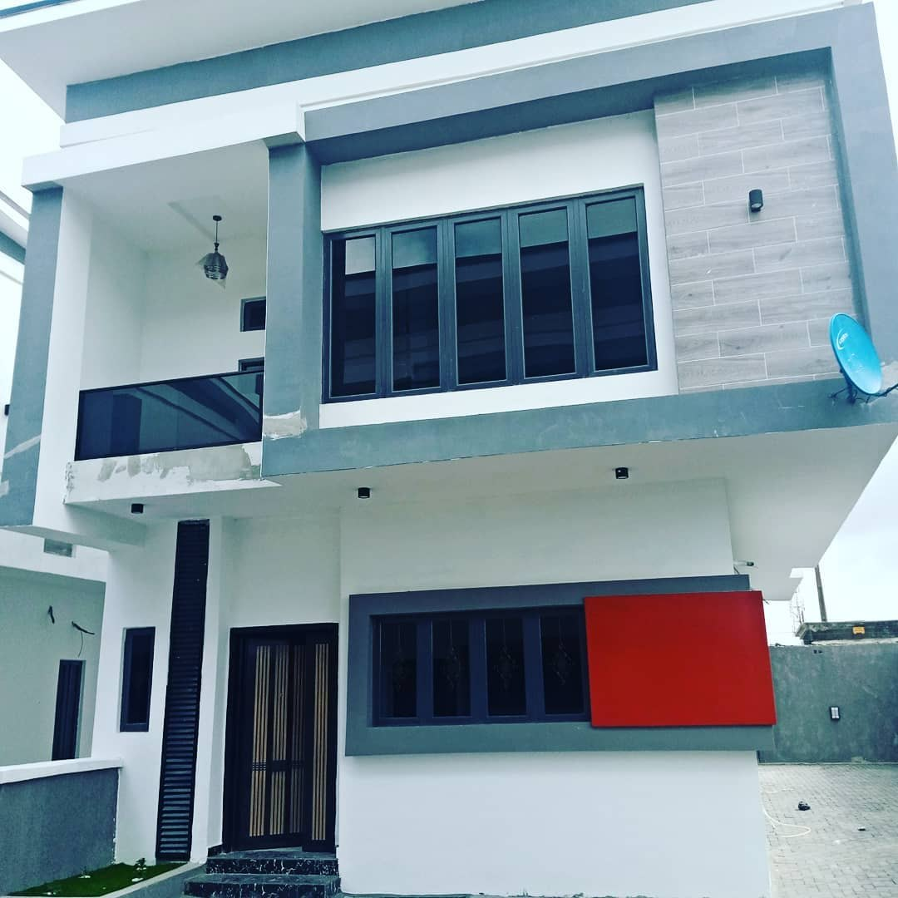
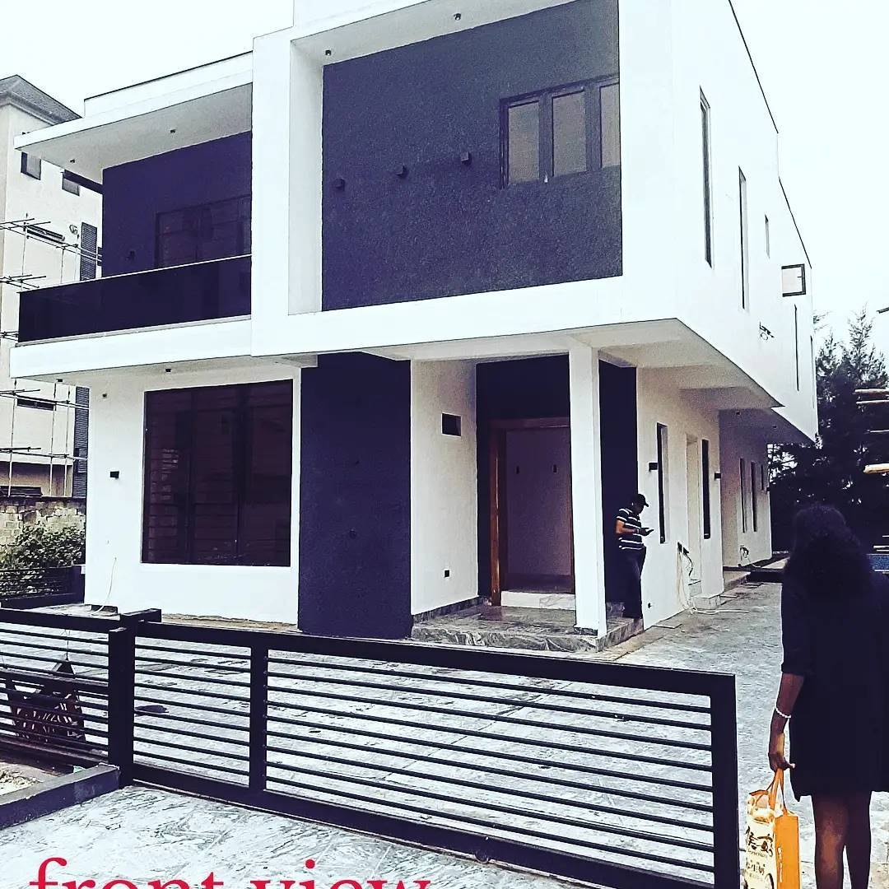

Coordinating work
from plan to delivery.
Experience across industrial chimney services and residential construction, combining project documentation, estimating, procurement, scheduling, field coordination and site supervision.
Project delivery experience
A practical mix of coordination and hands-on site leadership.
Project Coordinator
- Coordinate schedules, operational milestones, field crew rollouts and client updates across concurrent assignments.
- Review tender documents, drawings and specifications; support quantity takeoffs, bid schedules and estimate summaries.
- Solicit and compare supplier and subcontractor quotations, maintain historical cost records and support procurement decisions.
- Coordinate material procurement, equipment rentals, site logistics, kickoff and closeout documentation.
- Support COR-related submissions, safety records, inspection reports, change tracking and project handovers.
Construction Site Supervisor
- Supervised construction of nine five-bedroom duplex units, coordinating more than 15 workers and multiple trades.
- Planned daily site operations, coordinated subcontractor activities and monitored progress against milestones.
- Reviewed drawings and specifications, supported cost monitoring, coordinated inspections and maintained site records.
- Enforced site safety and quality procedures and addressed site issues to maintain workflow continuity.
Exclusive Courts residential development
A completed residential development photographed for this portfolio.

Site supervision & coordination
Supervised delivery of nine five-bedroom duplex units, coordinating site personnel and multiple trades while monitoring work progress, quality, safety and construction activities.
The photograph shows the completed building; it is not presented as a before-and-after record.
From groundwork to finished building
Residential construction photographed at different stages of work.
During construction


Site supervision in practice
Residential sites at different stages, from structure and finishes to external works. Supervision covered daily planning, coordinating trades, inspections and keeping site records.
Completed buildings



Project Coordinator resume
A focused resume for project coordination, construction coordination and project delivery opportunities.
A downloadable PDF can be added once the final resume file is selected.